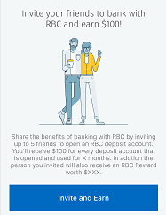
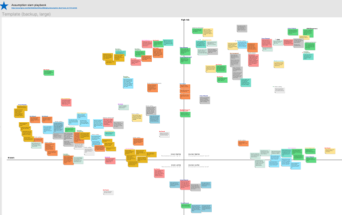
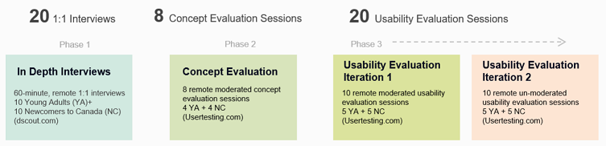
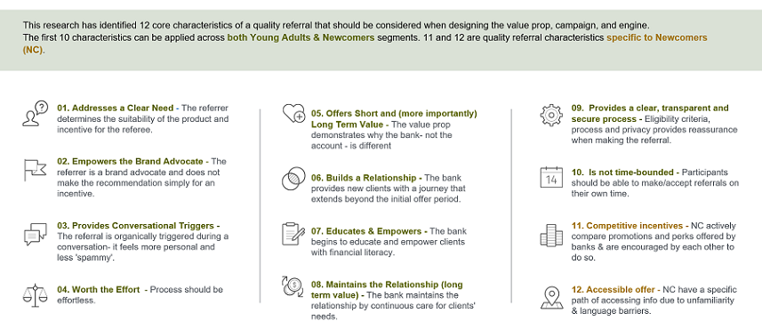
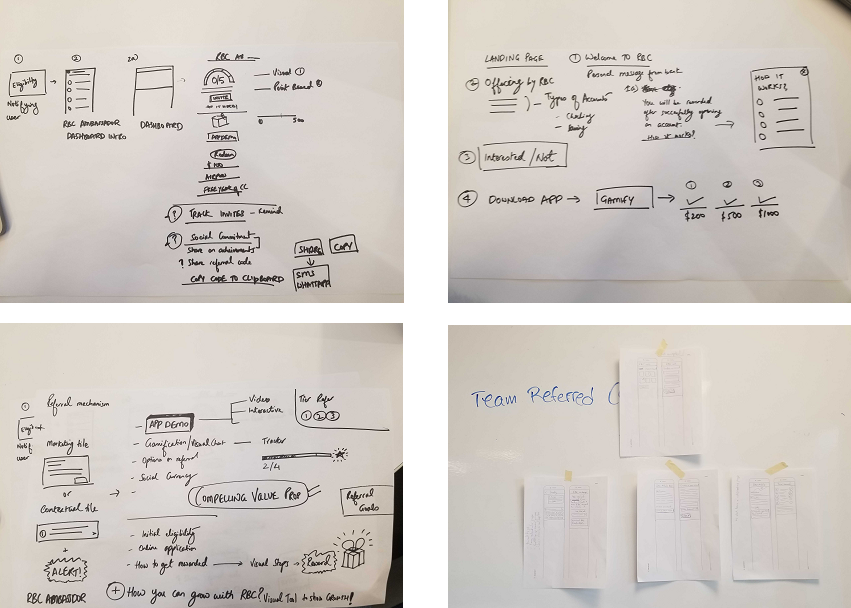
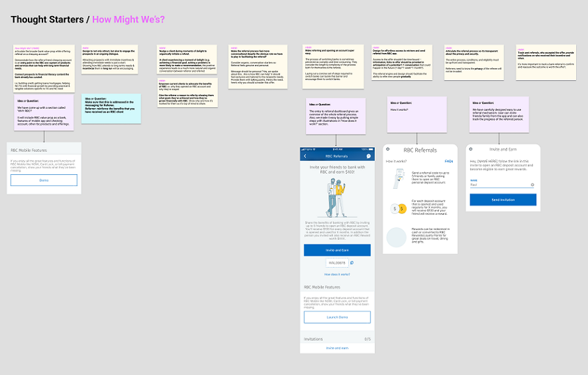
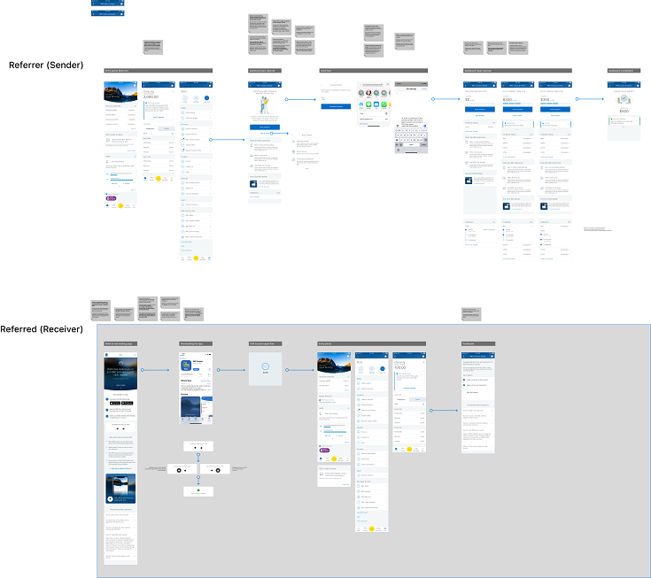
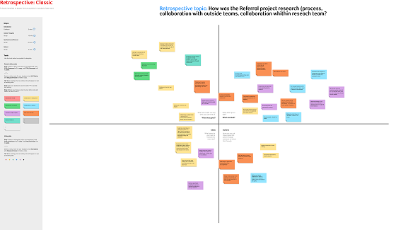

One of the interesting research projects I led was a discovery and evaluative work to inform the creation of a referral engine for a banking app.
The goal was to build a system to encourage existing customers, specifically Young Adults (YA) and Newcomers to Canada (NC), refer others to the bank. I led the team in a 4-week research which resulted in an engine with 10% higher user acquisition rate and a minimal customer calls (to request assistant), comparing to previous referral engines.
I kicked off the research by organizing an Assumption Slam (AS) workshop where team (business partners, product owners, and design squads) brainstormed and prioritized their “assumptions” about the project.
The key business questions were “how to create an engine successful in acquiring new clients?” and “how to make sure new clients stay engaged with the bank (after receiving their referral reward)?”. Two of key research questions were “what are characteristics of referral engines that bring value to people’s lives?” and “how can we assure the engine does not cause confusions for people?”. I also organized a Customer Experience Metrics (CEM) workshop to capture metrics for measuring project’s success, such as “number of calls to the bank on engine issues”. The CEM file was used to monitor metrics once the product was lunched.
Considering research’s short timeline to explore several complex topics, I focused the research on segments’ past positive and negative referrals experiences (banking and non-banking) and banking unmet needs. I then did a secondary research, looked at competitive referral systems in the market, and reviewed analytics data of existing referral engines. Next, I revised a plan for 20 In Depth Interviews, 8 Concept Evaluation, and 20 Usability Evaluations sessions.
I targeted customers and non-customers to collect perspectives of both Referrer (customer who refers) and Referred (non-customer who receives it).
In Depth Interviews (IDIs) helped dive deep into the topics in a short period of time and create an early empathy. By the end of interviews, I extracted 12 key characteristics for a successful referral across the segments which gave a clear direction for brainstorming Ideas. For instance, ‘successful referrals typically are triggered naturally during conversations and showcased by the Referrer, e.g., referring Uber-Eats as having lunch with a friend’. I also created 6 archetypes across YA and NC segments which team used as a guideline when ideating.  I helped the team prioritize the most impactful insights extracted from the IDIs. I then led an workshop in which team ideated around each of the insights, adapting the Crazy Eights technique.  I led Concept Test Sessions to give the team a chance to collect early feedback, understand shortcomings of ideas, and commit only when solutions resonated with customers. I led a close collaboration with the team to take notes and co-analysize the findings. We then translated them to problem statements using 5-Why practice. Finally, we created 'How Might We' statements that team used for the ideation session. For example, design team received positive feedback on a demo videofeature they created to help Referrer showcase the app without exposing their personal banking information.  After concepts got closer to high fidelity flows, I ran iterations of Usability Evaluation sessions so team can ensure flows are easy to use, remove the issues, and do final adjustments.  Looking at the call-center data of previous referral engines, I extracted confusion points of customers in their journey. The map was used to streamline the new flow. For instance, newcustomers (who got referred) had to setup a direct deposit to receive their incentives. The task was complex and resulted in many calls to bank. In the new flows, design team proactively communicated the steps customers needed to take and added a link to the location in the app they could set it up, which made the process very intuitive. During all of the research activities, team closely traveled with the research. To assure that, I continuously asked for feedback, sent debriefs, video snippets, and links to join the sessions, in their channels of choice. Design team helped with note-taking, co-analysis, synthesize of findings, and prioritizing insights to ideate designs on (using the templates and guides I put in place). We finished the project where everyone shared their perspective on "What was good", "What was bad", "Ideas", and "Actions.".
The research helped creating an engine that made the life easier for YA and NC by allowing them to help their community, give and get advice on banking, and build their finances, in a few clicks, and all within the banking app. My research also has been used to improve the overall experience of the digital and non-digital banking for YA and NC and helped the bank build a higher empathy with these two segments. The high level findings were also added to the Truth Repository which is a dynamic file I have created to increase the life cycle of high level research insights and inform product and research backlogs.